Lecture Records
SLIIT City UNI · Professional Skills Journal
An animated learning portfolio that documents every Professional Skills lecture in detail — what I learned, how I experienced it, and how I applied it — before closing with Grow Green, our final project, as real evidence of teamwork and growth.
Learning Path
00 — 10
Lecture reflections, soft skills, real-life applications and evidence — one chapter at a time.
11Records
50Plants
41Team Members
Skill Areas
Plants Distributed
Project Budget (LKR)
Year 2 • Semester 2
About Me
I am S. Vaheesh
Sivathayalan.
I'm a second-year BSc Information Technology student at SLIIT City University, currently in Year 2 Semester 2. This journal documents everything I'm learning in the Professional Skills module — the people-skills that turn a coder into a well-rounded professional.
I built this site by hand with HTML, CSS and JavaScript. It's both my coursework and a small portfolio piece — a record of how I'm growing, one week at a time.
Portfolio Purpose
Designed to show learning
before decoration.
This structure keeps the lecture journey as the main focus. Project evidence and photos are placed at the end, so the portfolio clearly shows what I learned first — and what I built with it after.
Lecture-first flow
The site opens with my Professional Skills learning journey rather than project photos — the learning comes first.
Detailed journal format
Every lecture includes its focus, key concepts, what I learned, my experience, soft skills, real-life application and evidence.
Final evidence section
Grow Green appears near the end as the practical outcome of teamwork, planning, communication and responsibility.
Lecture Journal
CHAPTERS
OF GROWTH
Eleven recorded lectures — each one expanded into a full learning record: slide focus, key concepts, personal reflection, developed skills, real-life application and evidence.
Skill Matrix
What the lectures
developed in me.
This section connects the weekly lessons to professional abilities I can use in academic, social and workplace contexts.
Understanding myself and managing emotions professionally.
Presenting my skills, achievements and growth in a professional way.
Making decisions that protect people, data and trust.
Handling professional conversations, documentation and follow-ups.
Reaching agreements that solve problems without damaging relationships.
Carrying myself with confidence in formal and social settings.
Final Project
GROW GREEN
This final section shows how the professional skills learned in lectures were applied through planning, teamwork, communication, budgeting and environmental responsibility.
Small Plant · Big Impact
A greener environment begins with one small step.
The project encouraged students and lecturers to understand the importance of plants and take small eco-friendly actions in daily life. "Grow" represents planting and caring, while "Green" represents nature and a healthy environment.
Project Document
Grow Green Final Report
The final project report is attached here for quick access. It can be viewed online or downloaded as a PDF.
Project Moments
Real moments from Grow Green
These photos highlight our final project presentation, teamwork and the plant-awareness activity in action.
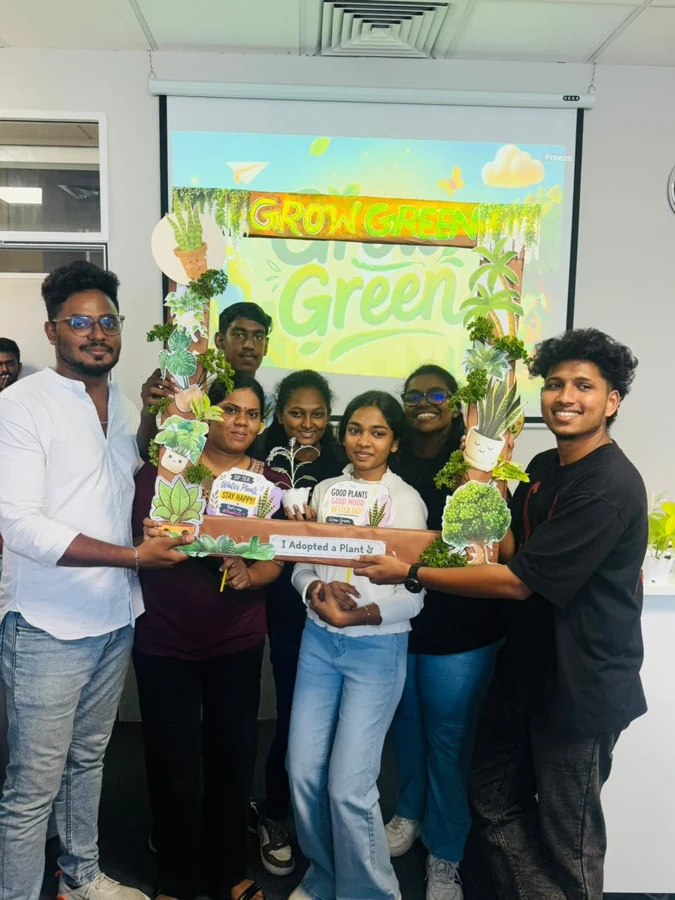
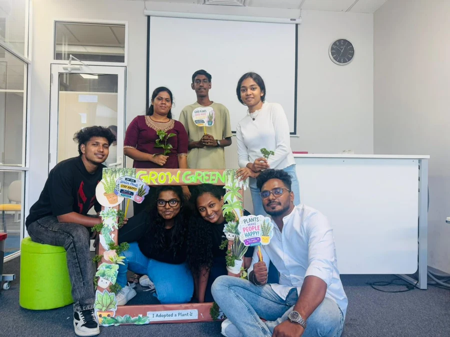
Project title
The title Grow Green represents encouraging people to grow plants and protect the environment. "Grow" shows planting and caring, while "Green" represents nature and a healthy environment.
Project purpose
Our group distributed plants to students and lecturers to promote environmental awareness and remind everyone that caring for nature starts with individual responsibility.
Main objective
To promote environmental awareness among students and lecturers by distributing plants within the university premises.
Specific objectives
- Encourage students and lecturers to plant and care for plants.
- Promote environmental responsibility within the university community.
- Increase awareness about the importance of greenery.
- Support a cleaner and eco-friendly university environment.
- Motivate young people to take small steps towards protecting nature.
Planning
The team discussed purpose, target audience, plant quantity, location, distribution method and required materials.
Implementation
Plants were distributed inside the university premises with a short explanation about caring for plants.
Resources
Plants, location, participants, team members, bookmarks, photo booth props and photo booth.
| Resource | Quantity / Details |
|---|---|
| Plants | 50 plants |
| Location | University premises — Turret Tower, Hall No. 403 |
| Participants | Students and lecturers |
| Team Members | 41 members |
| Other Materials | Bookmarks, photo booth props and photo booth |
50 plants
Plant transportation
Awareness material
Shared equally across the team
Outcomes
50 plants were distributed successfully and the project created environmental awareness among participants.
Challenges
Arranging plants, managing time, coordinating team members and organising distribution required careful planning.
Lessons learned
I learned that small actions can create positive impact and that teamwork, planning, communication and responsibility are essential for project success.
The official report contains full member details. For public website safety, this page displays names only.
Final report attached
The complete Grow Green report includes the title page, group members, introduction, objectives, activities, outcomes, budget and gallery.
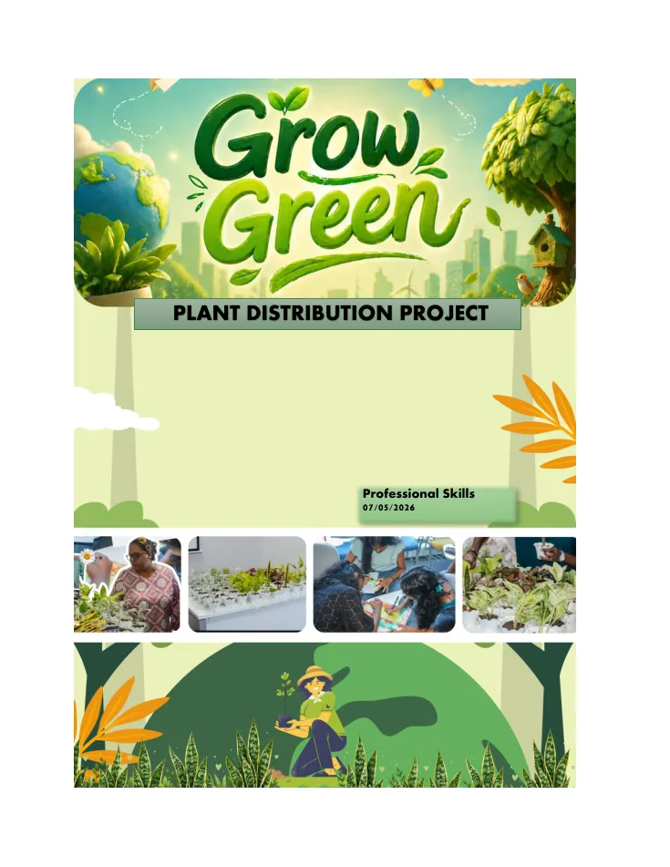
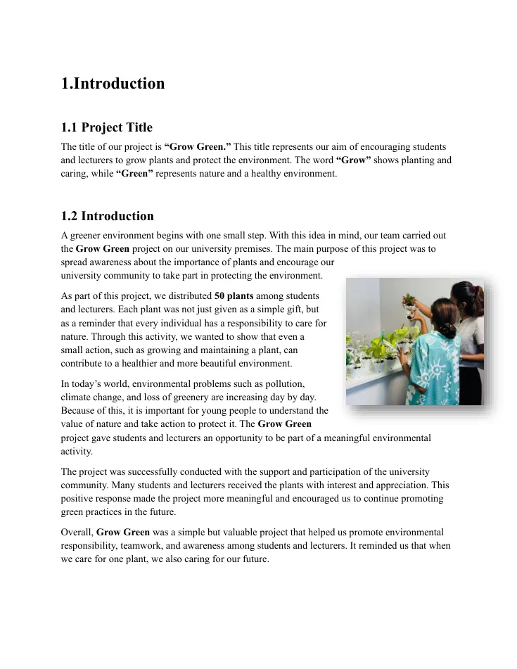
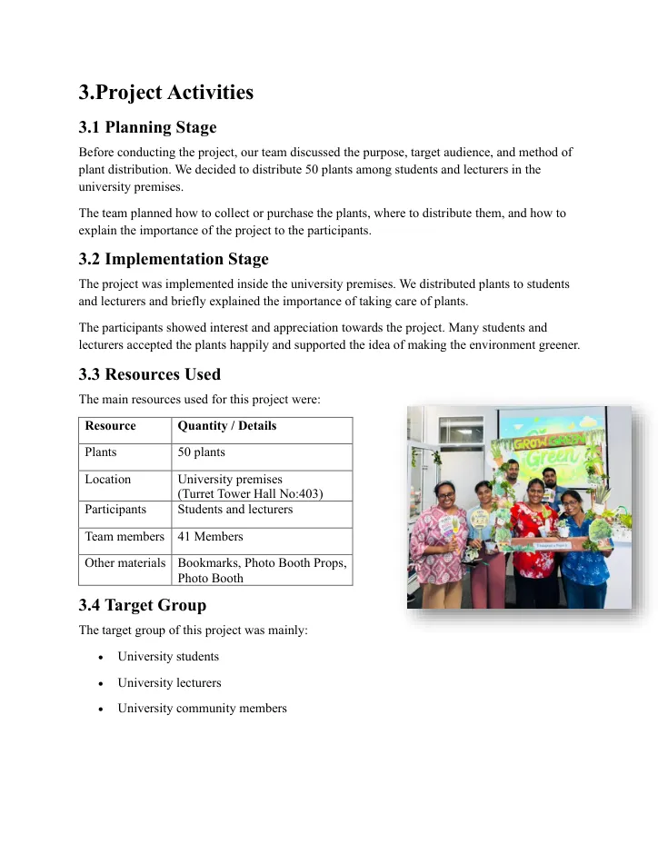
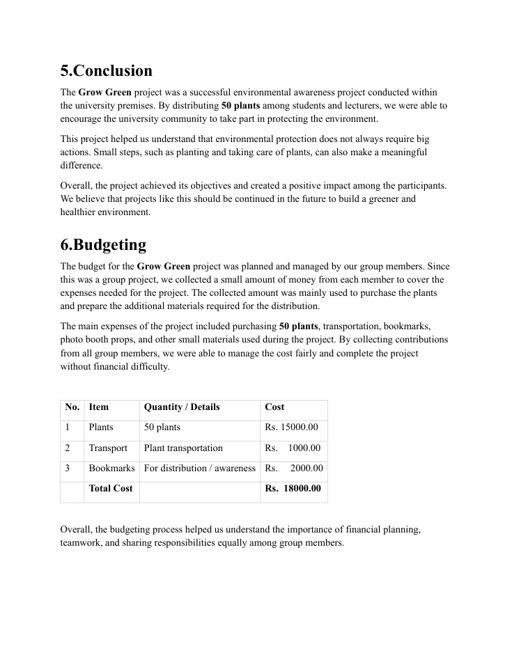
Gallery
The evidence,
in pictures.
Project photos are kept for the final section, so the portfolio first highlights lecture learning, then finishes with real project evidence.
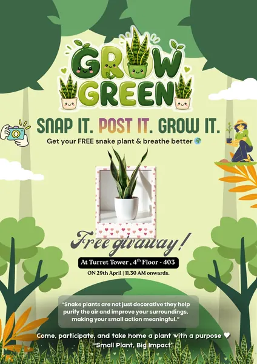
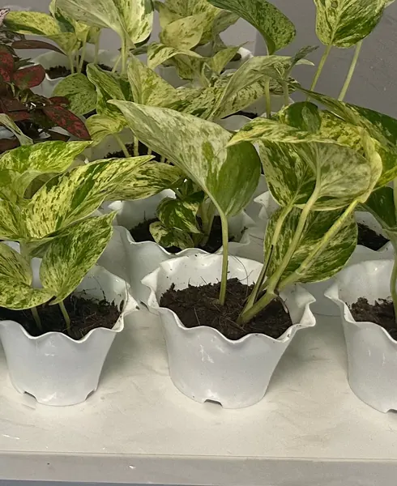
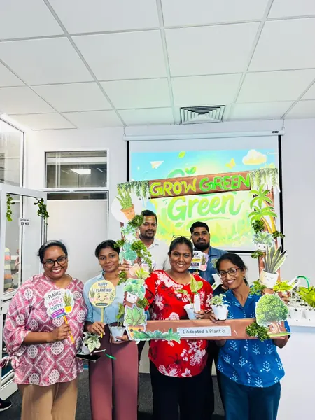
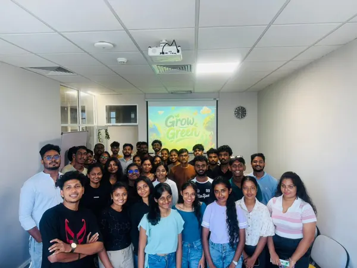
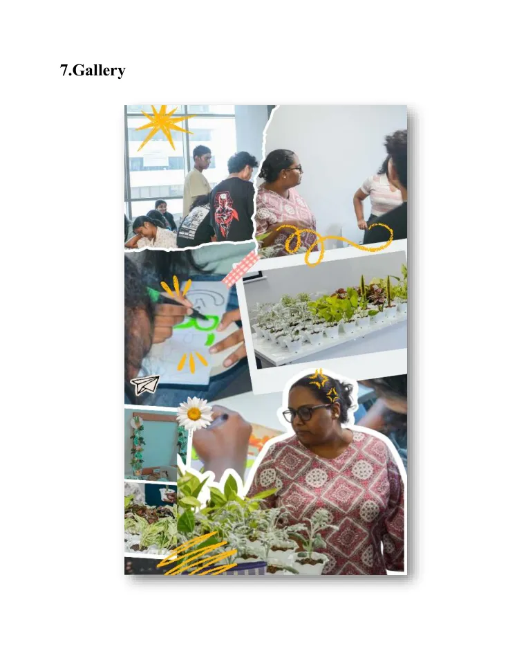
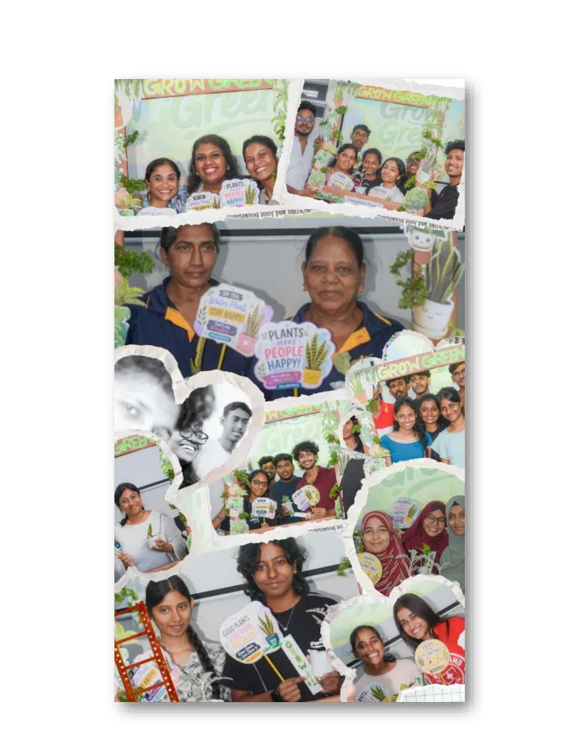